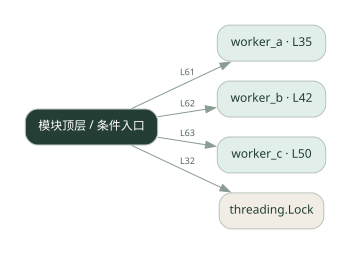

2-6 · 全课程第 26 节
共享状态
shared_state.py
源码快照 5494fc3bcb89 · 静态解析 · 2026-09-10
01 / 要完成的事
多个 worker 通过共享字典读写中间结果。
02 / 为什么要做
后一个角色需要前一个角色的结果，不应重复计算或丢失上下文。
03 / 当前代码状态
主要展示本地计算、内存状态或模拟流程；是否写文件/启动子进程请看调用表。 本次只做静态解析，没有运行练习，也没有替你填写或修改原代码。
04 / 调用图
打开大图 ↗实线：源码中的直接调用；虚线：函数引用/注册、动态调用或按方法名推断的候选。L 是调用所在源码行号。箭头不表示执行顺序或每次必经；分支、循环、异步调度及框架内部调用需结合源码。灰色是外部/未解析目标，橙色是动态分发；省略 print、len 和常规容器操作以减少干扰。孤立函数可能尚未接入。

先从 模块入口 出发，沿箭头找到本文件函数，再查看外部调用或动态分发。右侧调用清单保留所有静态调用点，能回到原文件逐行对照。
05 / 函数定位
| 函数 / 定义行 | 职责（源码注释） | 内部调用 |
|---|---|---|
worker_aL35 | worker A：查天气，写入共享状态 | 未发现显式函数调用（可能直接计算、读写状态或尚未实现） |
worker_bL42 | worker B：读天气，写总结（依赖 A 的结果） | state.get |
worker_cL50 | worker C：读所有状态，产出最终答案 | state.get |
这样做的优点
数据汇聚在一个地方，容易观察变化。
代价与局限
锁只能保护读写，不自动保证业务依赖顺序；共享状态会增加耦合。
适用场景
单进程、明确写入顺序的小型协作。
不宜直接照搬
跨机器共享或复杂并发一致性需求。
动手检验理解
调换两个 worker 的执行顺序，观察读取是否得到缺失值。
有未实现位置时先预测，再补齐验证。能启动不等于逻辑正确。
查看全部 13 个静态调用 / 引用点
| 调用方 | 目标 | 源码行 | 类型 |
|---|---|---|---|
| <模块入口> | threading.Lock | 32 | 调用 |
| worker_b | state.get | 45 | 调用 |
| worker_c | state.get | 53 | 调用 |
| <模块入口> | print | 57 | 调用 |
| <模块入口> | print | 58 | 调用 |
| <模块入口> | print | 59 | 调用 |
| <模块入口> | print | 61 | 调用 |
| <模块入口> | worker_a | 61 | 调用 |
| <模块入口> | print | 62 | 调用 |
| <模块入口> | worker_b | 62 | 调用 |
| <模块入口> | print | 63 | 调用 |
| <模块入口> | worker_c | 63 | 调用 |
| <模块入口> | print | 64 | 调用 |